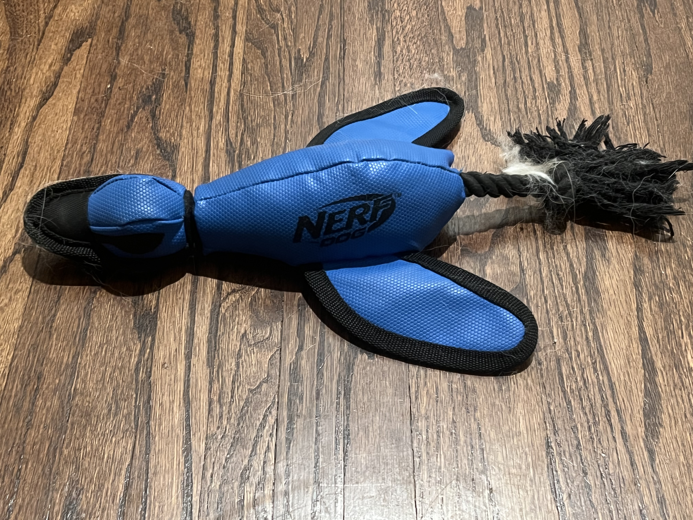

Summer and Benny's Toy Gallery

Benny loves to tug! This blue rope is best when on a video call and Benny had his elevated puppy energy.
Flingles is a spin off Pringles and is the ultimate toy. the length promotes tugging. But inside there is a bungee cord, crinkle and squeaker!
Benny & Summer have both enjoyed this yellow ball. Summer was too smart and quick for getting her snacks out and did not play with it once she was done. Once we added the ball inside it became a hand me down toy for Benny. He enjoys kicking, biting and trying to free the ball inside. Both love to play fetch with the tennis balls.
Benny loves lamb chop. He has had smaller versions in the past and has destroyed them all. I believe this is lambchop #5?
To be clear Bark Brew is Summer's toy...but I find Benny randomly pulls it to his bed. lol THis is a plush with a squeaker.

Summer loves to hunt. THis is a fun toy for her because there is a bungee cord and tip on the beak that allows for us to slingshot this duck in the air. Summer loves to jump and get it while in the air.